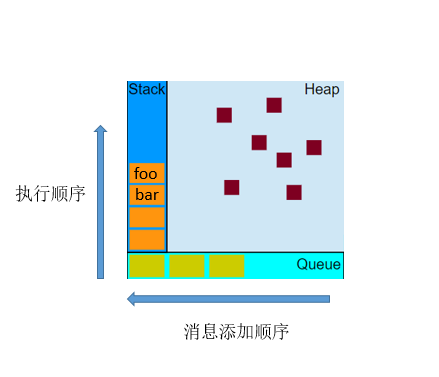

function foo(b) {
var a = 10;
return a + b + 11;
}
function bar(x) {
var y = 3;
return foo(x * y);
}
console.log(bar(7));
栈
当调用 bar 时，创建了第一个帧 ，帧中包含了 bar 的参数和局部变量。当 bar 调用 foo 时，第二个帧就被创建，并被压到第一个帧之上，帧中包含了 foo 的参数和局部变量。当 foo 返回时，最上层的帧就被弹出栈（剩下 bar 函数的调用帧 ）。当 bar 返回的时候，栈就空了。
队列
一个 JavaScript 运行时包含了一个待处理的消息队列。每一个消息都与一个函数相关联。当栈为空时，从队列中取出一个消息进行处理。这个处理过程包含了调用与这个消息相关联的函数（以及因而创建了一个初始堆栈帧）。当栈再次为空的时候，也就意味着消息处理结束。
